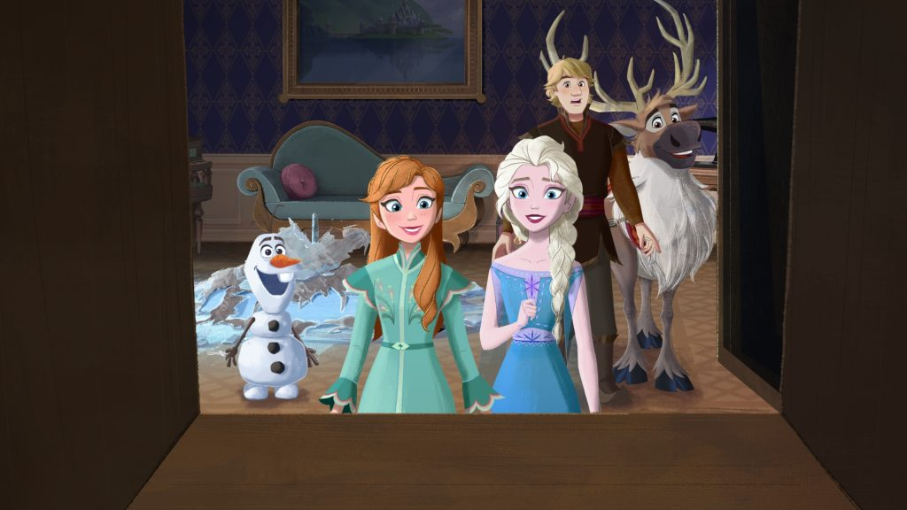

Usually skip character meets on your way to the next ride? This is for you. One conversation might become a highlight of your day.
One group expected solitude to feel better. Another group had a better commute after talking to a stranger. A useful analogy for meets. · Epley & Schroeder (2014)
Anna was looking for her mother’s dress in the new Frozen short. I had an idea.
No photo. One of my favorite conversations.
I brought an idea. They made it part of the story.

Her story: a missing dress.
My opening: a way to search the castle.
Something in my life reminded me of your story. Can I tell you about it?
“I’m learning to cook. Tiana, what dish should I start with?”
Curiosity is enough. You don’t need a clever script.
“But I’m an adult.” Adults play, too.
A randomized study of 533 adults found short-term well-being benefits from one-week playfulness exercises.
Proyer et al. (2021) · Adult playfulness, not a study of Disney meetsChoose the ride.
A short wait makes it an attractive choice.
Give one meet a chance.
Your prediction could be wrong.
My case: a meet deserves a place among your options.
My habit: phone away for the conversation, photo afterward.
A great interaction? Send a Cast Compliment.
Pixie dust is something you notice afterwards, not something you chase.
One thing from your life.
One opening into their story.
Then tell us what happened.
Questions?